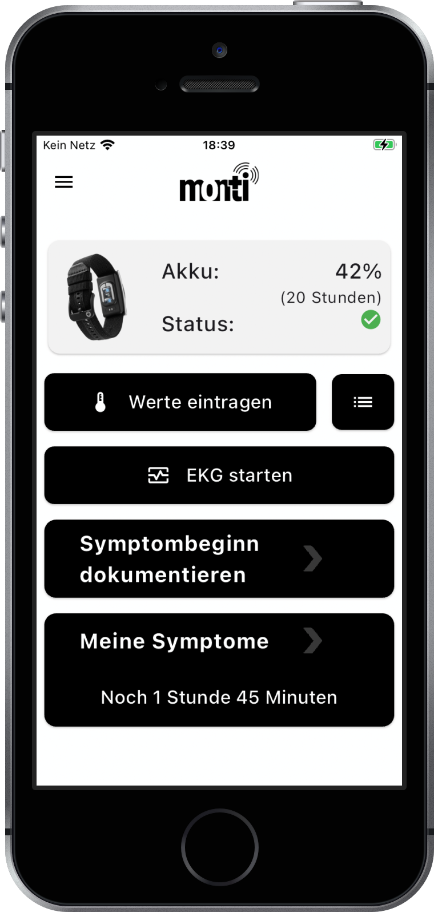

KI-Plattformen für regulierte Hochsicherheitsumgebungen
Integration, Delivery und Betrieb · Fallbeispiel monti
Luca Leon Happel · Principal Systems Architect & Core Developer, monti
[0:00] Danke für die Einladung. Ich zeige euch ein Projekt, das ich vier Jahre lang gebaut und
betrieben habe: monti. Unsere Kunden sind Universitätskliniken, also regulierte Organisationen
mit hohen Sicherheitsanforderungen, ähnlich wie ein Versicherer. Die Medizin lasse ich weg und
konzentriere mich darauf, wie man unter solchen Vorgaben baut: wie die Komponenten geschnitten
sind, wie Code und KI-Modelle in die Produktion kommen, wie wir das bei drei Kunden betreiben und was ich davon zu Allianz
Leben mitnehmen würde. Rund 10 Minuten, Fragen gern zwischendurch.
01 · Überblick
Fallbeispiel monti: KI auf hochsensiblen Daten
Gesundheitsdaten als kontinuierlicher Datenstrom, ausgewertet von eigenen KI-Modellen. Produktiv seit 2022, je Kunde eine eigene Instanz.
2× Platz 1 beim Ideenwettbewerb der HHU 2023
3
regulierte Großkunden
~150
Nutzer:innen parallel
~10 GB
pro Nutzer:in und Tag
1,84 M€
Fördermittel
Principal Systems Architect & Core Developer
Architektur, Großteil von Backend und App, Teile der KI, Betrieb

[0:30] Angefangen hat monti als Gründungsidee, beim Ideenwettbewerb der HHU 2023 haben wir zweimal
den ersten Platz geholt. Patient:innen tragen ein Armband, die App lädt die Rohdaten hoch, das Backend sammelt sie,
unsere KI-Algorithmen werten sie aus, etwa um Vorhofflimmern oder Infektionen früher zu erkennen.
Studienärzt:innen arbeiten über eine Weboberfläche. Standorte: Uniklinik Düsseldorf, HHU und
Uniklinik Aachen. Zur Größenordnung: rund 150 Patient:innen gleichzeitig, pro Person etwa 10 GB
Rohdaten am Tag, stark schwankend. Kein Big-Data-Konzern, aber genug, dass man über Speicher,
Backups und asynchrone Verarbeitung nachdenken muss.
Meine Rolle: Principal Systems Architect und Core Developer. Mitgegründet, Architektur entworfen, etwa zwei Drittel der Backend-Commits und fast
die ganze App geschrieben, an den Algorithmen mitentwickelt, Betrieb und BSI-Doku verantwortet.
[1:30] Hier läuft monti: Uniklinik RWTH Aachen, und in Düsseldorf Uniklinik und Heinrich-Heine-Universität
auf einem Campus. Drei große Häuser mit eigener IT und eigenen Vorgaben.
02 · Ausgangslage
Anforderungen regulierter Hochsicherheitskunden
Datenhoheit
keine Daten an Dritte, auch nicht für KI
Abgeschottete Netze
DMZ, Proxys, PKI, Freigaben
Regulatorik
DSGVO · BSI · ISO 27001
Fremdsysteme
Hersteller-SDKs, proprietäre Formate
Nachweisbarkeit
jede Änderung auditierbar
Verfügbarkeit 24/7
Ausfall = Datenverlust
Bei euchdieselben Anforderungen: DORA, AzTech-Freigaben, Landing Zone
[2:00] Die Rahmenbedingungen haben fast jede technische Entscheidung bestimmt. Die wichtigste:
Daten bleiben beim jeweiligen Kunden, auch für die KI. Deshalb gibt es kein zentrales SaaS und
keine Cloud-KI-API, sondern eigenständige Installationen derselben Codebasis, jeweils in der DMZ.
Jeder Kunde hat eigene Proxys, Zertifikate und Freigabeprozesse, jede Änderung muss nachweisbar
sein. Hersteller-SDKs ändern sich ohne Vorwarnung. Und wir waren zwei Entwickler für App,
Backend, KI und Betrieb, also musste alles automatisiert sein.
Das ist, glaube ich, nah an dem, was ihr mit AzTech und der Landing Zone habt: Man ist Konsument
einer Plattform und baut innerhalb von Vorgaben, die man nicht selbst setzt.
03 · Architektur
Systemarchitektur je Kundeninstanz
[3:00] Das ist der Schnitt der Plattform, an jedem Standort gleich. Nach außen gibt es genau
einen Eingang, nginx mit TLS 1.3. Alle anderen Dienste sind nur intern erreichbar. Dahinter: die
API für die App, die Weboberfläche fürs Studienteam und der Fragebogen-Editor. Herstellerformate
wie WIFF und Realm übersetzen eigene Adapter, damit das Format des Herstellers nicht in unser
Datenmodell durchschlägt. Postgres ist die einzige Quelle der Wahrheit, gesichert mit pgBackRest.
Rechts die KI: Sie liest die Rohdaten, die Ergebnisse fließen zurück in die Datenbank und
erscheinen in der Weboberfläche. Dazu gleich mehr.
04 · KI-Integration
KI als Dienst hinter einer Schnittstelle
Klarer Vertrag
Rohdaten rein, Ergebnisse zurück in die Datenbank. Modelle austauschbar.
Asynchron als Job
Inferenz entkoppelt von Upload und Weboberfläche.
Daten bleiben im Haus
Docker und Kubernetes in der DMZ, GPU lokal, keine externe KI-API.
LLM auf Freitext
Unstrukturierte klinische Texte werden in strukturierte Felder übersetzt.
Bei euchBedrock, SageMaker oder eigene Modelle? Inklusive DORA-Drittparteienrisiko
[4:30] Für die Anwendung ist die KI ein Dienst mit klarem Vertrag: Rohdaten rein, Ergebnisse
zurück in die Datenbank, von dort in die Weboberfläche. Dadurch konnten wir Modelle tauschen,
ohne App oder Web anzufassen. Die Auswertung läuft asynchron, niemand wartet auf eine GPU.
Eine externe KI-API war aus Datenschutzgründen ausgeschlossen, also lief alles als Container
in den DMZ der Kliniken und auf einem eigenen GPU-Cluster an der HHU.
Sprachmodelle haben wir für unstrukturierte klinische Texte genutzt. Bei euch wären das Anträge,
Schriftverkehr oder Leistungsfälle, und dieselbe Frage: Bedrock, SageMaker oder eigene Modelle,
und was heißt das fürs DORA-Drittparteienrisiko? Zu den Algorithmen selbst kann ich wegen der
Patente nicht ins Detail gehen.
05 · Integration
Vier Integrationsmuster
API-First
OpenAPI-Vertrag, Client generiert. Brüche fallen im Build auf.
FRP / Event-driven
Datenverarbeitung mittels Streams.
Async high fidelity + throughput
Eigener patentierter KI-Algorithmus.
Patentierter KI-Algorithmus
DE 10 2023 201 630 A1, mitentwickelt mit Prof. Kollmann
Als Team-StandardVorlage und Referenzimplementierung statt PDF: Vertrag, Adapter vor ABS, asynchrone KI-Jobs
[5:45] Vier Muster, die ich in jedem Integrationsprojekt wieder anwenden würde.
Erstens API-First: Die OpenAPI-Spezifikation ist der Vertrag, der Dart-Client der App wird daraus
generiert. Passt er nicht mehr, schlägt der Build fehl und nicht erst die App beim Patienten.
Zweitens Functional Reactive Programming: Die Daten werden als Streams verarbeitet,
also als Folge von Ereignissen, die man deklarativ filtert, transformiert und kombiniert.
Drittens asynchron mit hoher Genauigkeit und hohem Durchsatz: Upload sofort quittiert, die
Auswertung läuft danach über unseren eigenen, patentierten KI-Algorithmus. Details dazu kann ich
wegen der Patente nicht nennen.
Viertens der KI-Algorithmus selbst: patentiert als DE 10 2023 201 630 A1, mitentwickelt mit
Prof. Kollmann. Für die Plattform ist er ein Dienst hinter dem Vertrag. Bei euch säße so ein
Adapter vor dem ABS-Datenmodell.
06 · Lessons Learned
Bewährte Muster und Verbesserungen
Größte HerausforderungSoftware von Drittanbietern folgte eigenen Konventionen statt etablierter Protokolle. Deshalb haben wir die KI-Verarbeitung selbst übernommen.
Bewährt
Fremdsysteme hinter Adaptern
Vertrag zuerst, Client generiert
ganzer Stack in der CI
Heute anders
Queue statt In-Process-Task
Secret-Manager statt .env
versionierte Images als Release
[7:00] Die größte Herausforderung war die Zusammenarbeit mit Software von Drittanbietern. Die
folgte oft eigenen Konventionen statt etablierter Protokolle, und darauf hatten wir wenig Einfluss.
Deshalb haben wir die KI-Verarbeitung selbst übernommen, statt uns auf die Auswertung des
Herstellers zu verlassen. Ein Beispiel für die Abhängigkeit: 2025 brach Xcode 16 das
Hersteller-SDK, drei Monate keine App-Releases, bis wir das SDK selbst repariert hatten.
Was uns gerettet hat: Weil Fremdsoftware hinter Adaptern lag, mussten wir am Backend und am
Datenmodell nichts ändern. Ebenso bewährt: der generierte Client und der komplette Stack in der CI.
Heute anders: echte Queue mit Retry und Dead Letter Queue statt Hintergrund-Task, Secrets in einen
Secret-Manager mit Secret-Scanning in der CI, Releases als versionierte Images statt Build auf
dem Zielserver.
07 · Übertrag
So würde ich einen KI-Use-Case bei euch anbinden
OffenSchreibpfad zurück ins ABS? Human-in-the-Loop und Audit-Trail für DORA und AI Act
[8:00] Wie würde das bei euch aussehen? Oben eine Skizze, unten das Gegenstück bei monti.
ABS direkt abzufragen verträgt ein Kernsystem dieser Größe nicht, also kommen die Daten über CDC
oder Batch als Datenprodukt in OneDIA an. Das ist mein Adapter: Das ABS-Datenmodell schlägt
nicht ins KI-Modell durch. Ein Event oder eine Queue stößt den KI-Dienst an, Bedrock oder
SageMaker, asynchron, mit Retry und Dead Letter Queue. Das Ergebnis geht mit Audit-Trail zurück
ins Fachsystem, also Eingabe, Modellversion, Ausgabe, wer entschieden hat.
Offen ist für mich vor allem der Rückweg: Darf etwas zurück ins ABS geschrieben werden, und wo
sitzt der Mensch in der Schleife? Das würde ich mit OneDIA und AzTech zuerst klären.
Danke
Fragen?
Meine ersten 90 Tage
Pipelines und Freigabewege verstehen
ABS-Zugriff über OneDIA kennenlernen
Referenz-Integration für einen KI-Dienst
daraus Vorlagen fürs Team
Meine Fragen an euch
Wie kommt Code heute in Produktion?
Wie arbeiten Integration und DevOps zusammen?
Wo hakt es zwischen Data Science und Betrieb?
Wie laufen KI-Dienste heute?
[9:30] Zum Schluss, was ich in den ersten drei Monaten mit euch angehen würde: erst verstehen,
wie bei euch deployt und von AzTech freigegeben wird und wie man über OneDIA an ABS-Daten kommt,
dann eine Referenz-Integration bauen: KI-Dienst hinter Vertrag, asynchron, mit Monitoring.
Daraus werden Vorlagen fürs Team. Standards, die niemand benutzt, sind keine, deshalb lieber
eine funktionierende Vorlage als ein PDF.
Danke fürs Zuhören. Gern zuerst eure Fragen, dann hätte ich selbst ein paar
(CI-Werkzeug, ECS oder EKS, Bedrock, SageMaker oder eigene Container?).
Anhang · CI/CD
CI/CD-Pipeline mit Health-Gates
Nur bei Nachfrage zeigen. Zwei Stufen. Bei jedem Push laufen Linting, zwei Typchecker und gut 560 Tests, über just
und uv. Bei jedem Pull Request auf dev oder master baut die Pipeline den kompletten Stack und
fährt ihn mit docker compose hoch, genau wie in Produktion. Erst wenn Datenbank und
Health-Endpoint grün sind, ist der PR mergebar. Schlägt etwas fehl, landen die Logs als Artefakt
im Run. Die App baut Android-APKs in GitHub Actions, iOS geht über TestFlight.
Datenbankmigrationen laufen beim Start des Web-Containers automatisch (alembic upgrade head).
Falls ihr fragt, wie man die zurückrollt: gar nicht gern, deshalb sollten Migrationen
abwärtskompatibel sein, also erst erweitern, dann umstellen, dann aufräumen.
Nur bei Nachfrage zeigen. Betrieb heißt für mich: Daten gehen nicht verloren, Ausfälle bemerken wir vor den
Nutzer:innen, und die Angriffsfläche ist klein. pgBackRest archiviert das WAL kontinuierlich,
sonntags Full, werktags differenziell, wir können also auf einen Zeitpunkt zurückspringen.
Netdata und Uptime-Kuma melden Probleme. Dazu TLS 1.3 mit HSTS-Preload, eine Nonce-basierte
Content Security Policy, TOTP-MFA, Firewall und 90 Tage Löschfrist für Logs.
Der Düsseldorfer Server handelt inzwischen sogar einen Post-Quanten-Schlüsselaustausch aus.
In AWS übernehmen das RDS, CloudWatch und IAM. Die Dienste sind neu für mich, die Anforderungen
dahinter kenne ich aus dem Betrieb. Compliance-Details habe ich im Anhang.
Nur bei Nachfrage zeigen. monti läuft bei drei Großkunden: dem Universitätsklinikum Düsseldorf, der
Heinrich-Heine-Universität und der Uniklinik RWTH Aachen. Jeder Kunde hat eine eigene Instanz in
seiner eigenen Infrastruktur, alle laufen auf derselben Codebasis.
Falls gefragt: Unterschiede nur per Konfiguration, Rollout in Patch-Fenstern. Verbesserungspotenzial:
versionierte Images aus einer Registry, gestufter Rollout, Rolling Updates statt kurzer Downtime.
Nur bei Fragen zu Docker/Compose zeigen. Neue Dienste erben Logging, Proxy, User und
Restart-Policy. Alles außer nginx bindet an 127.0.0.1. Proxy-Variablen fließen in Build und Laufzeit,
so baut das Image auch hinter der Klinik-Firewall.
Bei euchDORA: IKT-Risikomanagement, Änderungsnachweise, Resilienztests
Nur bei Fragen zu DORA, BSI oder Datenschutz zeigen. Kernaussage: Compliance funktioniert
nur, wenn sie in Pipeline und Betrieb eingebaut ist. Änderungen über PR und Review, Migrationen
versioniert, Zugriffe im Audit-Log. Den Audit-Nachweis muss man dann nicht extra erstellen.
flake.nix und flake.lock pinnen Python, PHP, Node, Flutter und openapi-generator; lokal und in
der CI dieselbe Umgebung. Mein meistgenutztes öffentliches Repo ist mach-nix-template (71 Sterne).
Terraform habe ich nicht produktiv eingesetzt, das sage ich gleich dazu. Gemeinsam ist das
deklarative Denken. Neu wären für mich State-Management und die Provider. Die Einarbeitung
traue ich mir schnell zu.